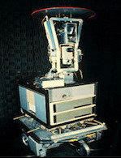
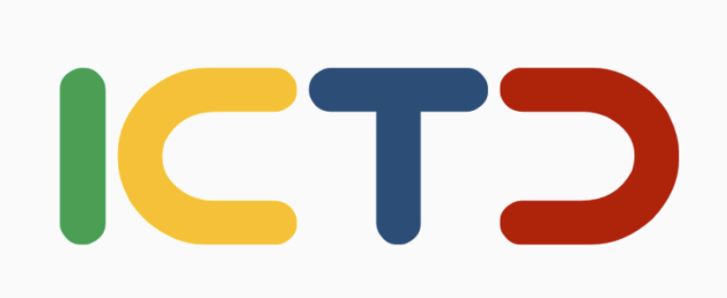

|
Yunwei Zhao I'm a master student in Computer Science at Cornell University. I am actively seeking PhD opportunities for the fall of 2024! As a highly self-motivated and independent person, my time at the University of Washington has been marked by significant accomplishments. At University of Washington, my work under Professor Sheng Wang focused on designing robust evaluation protocols of LLMs from human feedback and advancing multilingual and multimodal translation methods for science (Gemini, Crit2SQL, and BioTranslator). This research experience solidified my interest and commitment to adaptive and trustworthy NLP. I have also worked with Professor Richard Anderson on user-centric technology that aids people in developing regions (eKichabi V2). All of these experiences have solidified my interest in user-centric NLP systems, which enhance my passion for the broader field of human-AI interaction. At Cornell, I have been actively working on research, startup projects, and internships to design user-centric NLP systems in practice and integrate them into real products to study human-LM interaction. Email / CV / Research Statement / Github / Google Scholar / Twitter |
I already have hundreds of ideas waiting
for me to research on and realize,
and I am highly self-motivated, continuously learning,
and practicing. Recently, I have been diving into full-stack practice for NLP for healthcare,
transitioning from 2D images to 3D assets, exploring mixed reality, and creating an
out-of-the-box, interactive, multi-modal, multi-lingual communicative system. It will be the
same for the next semester. I am open to new ideas and topics.
|
ResearchMy research interests lie in adaptability, trustworthiness, and human-AI interaction. I aim to bridge the gap in user engagement by integrating real-time human feedback with AI design to develop AI agents that can learn from human behaviors, communicate naturally, and explain their processes. I am also broadly interested in the intersection of Human-Computer Interaction and Natural Language Processing. So far, I have two authored papers under review: one is eKichabi V2 with Professor Richard Anderson where I actively involved in app design and implementation, user testing, data analysis, and manuscript refinement; the other one is Crit2SQL where I contribute to dataset analysis and development with Professor Sheng Wang. |
Recent Works |
|
eKichabi v2: Explorations in Designing and Scaling a Dual-Platform
Application in Rural Tanzania
Ananditha Raghunath, Alexander Metzger, Hans Easton*, Xunmei Liu*, Fanchong Wang*, Yunqi Wang*, Yunwei Zhao* Paper under review at ACM CHI Conference 2024. App |
|
Crit2SQL: Dataset and Analysis for Criteria2SQL Generation
Yuan Zhou, Hanwen Xu, Addie Chambers, Chuwei Xia, Cai Yang, Sihang Zeng, Jianzhu Yao, Tianyin Wang, Mingzhe Wu, Yunwei Zhao, William Howard-Snyder, Mingxin Zhang, Zixuan Liu, Yang Lu, Tao Yu, Sheng Wang Paper under ACL Rolling Review. |
|
Multilingual translation for zero-shot biomedical classification using
BioTranslator
Hanwen Xu, Addie Woicik, Hoifung Poon, Russ B. Altman & Sheng Wang Nature Communication, 2023. Github / News / Doc / Paper |
|
Gemini: memory-efficient integration of hundreds of gene networks with
high-order pooling
Addie Woicik, Mingxin Zhang, Hanwen Xu, Sara Mostafavi, Sheng Wang Bioinformatics, 2023. Github / Paper |
Miscellanea |
|  |
Undergraduate Teaching Assistant,
CSE473 Fall 2022
Undergraduate Teaching Assistant, CSE473 Spring 2022 |

NAACL
|
Student Volunteer, NAACL 2022 |

2022 |
Student Volunteer, ICTD 2022 |
|
|